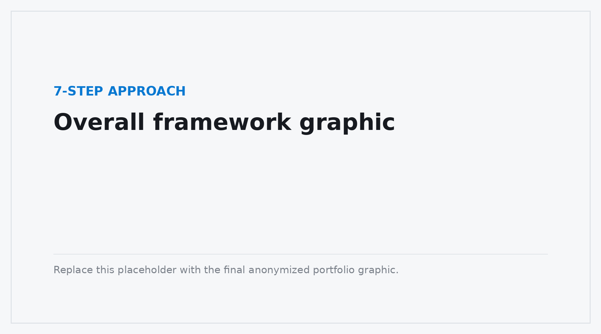
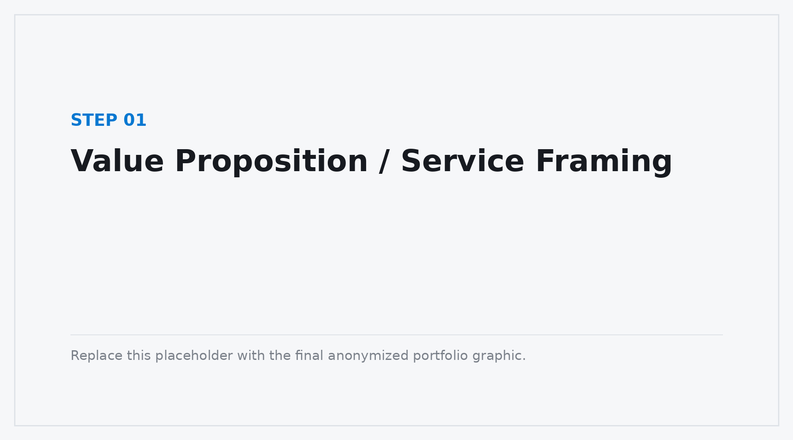
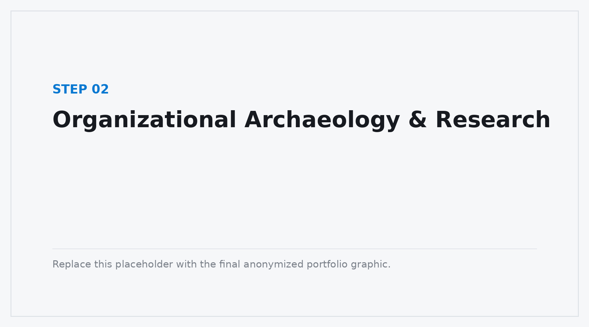
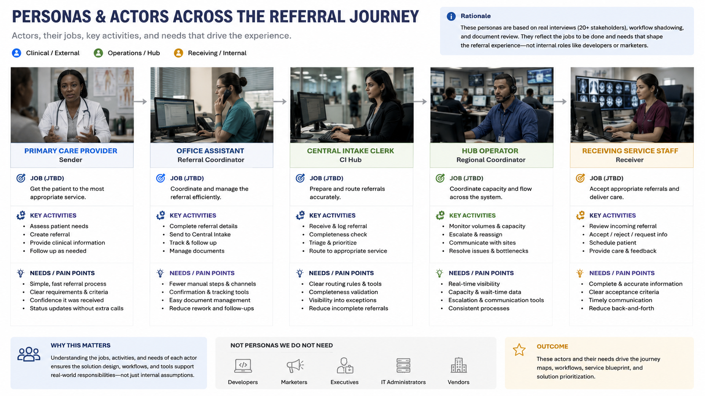
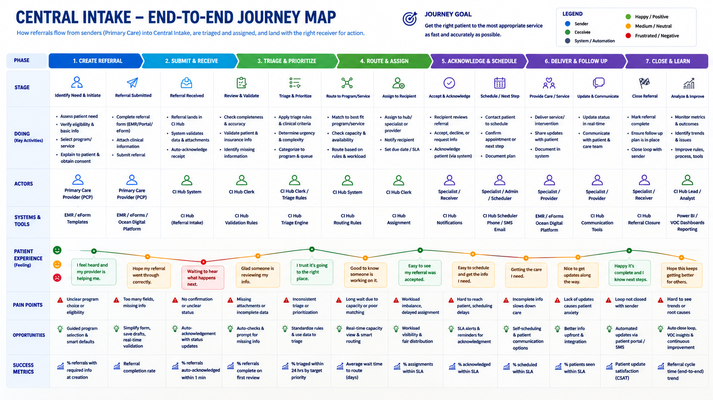
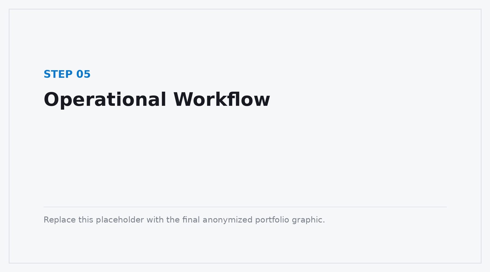
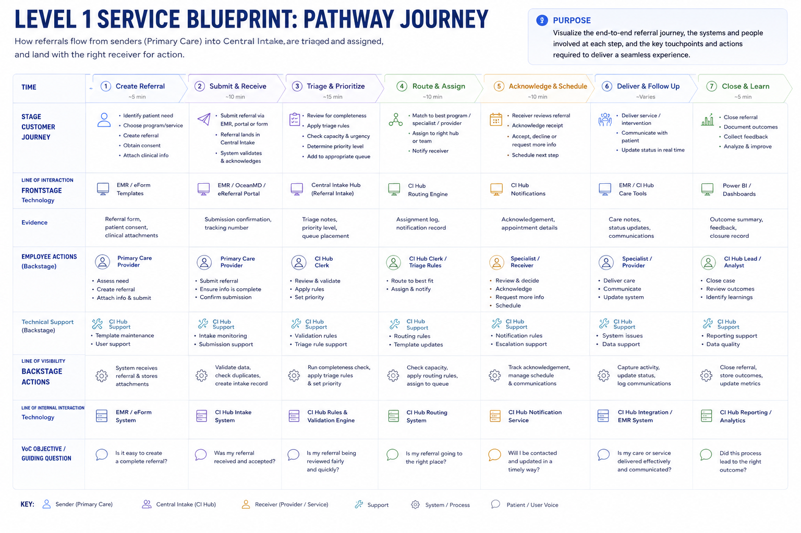
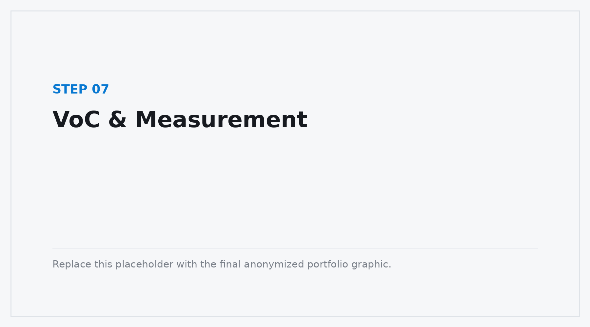
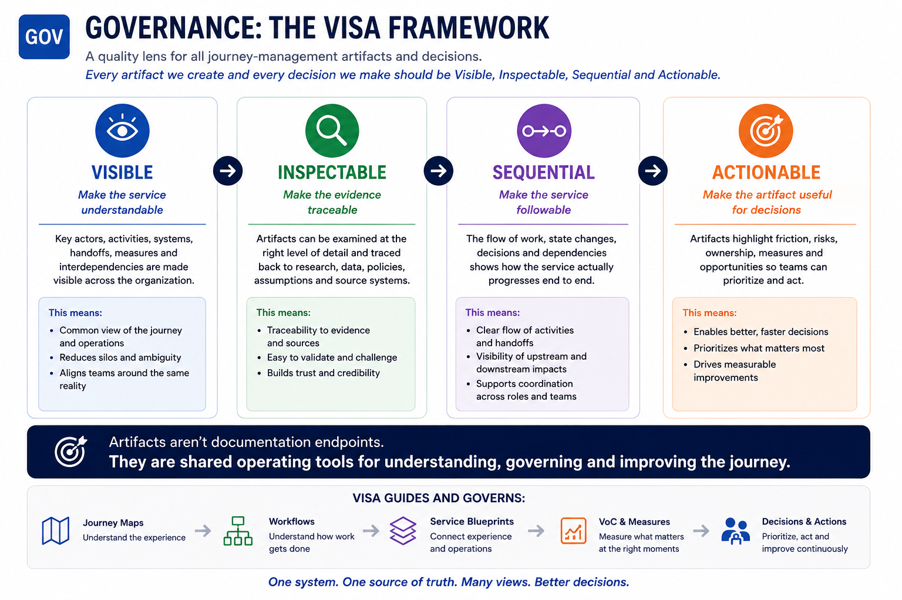
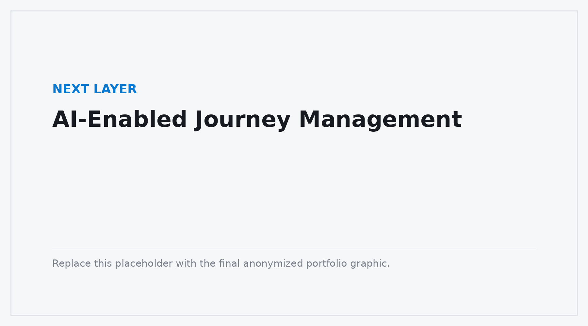

SELECTED CASE STUDY
Ontario Health
A 7-Step Approach to Enterprise Journey Management
Making a Complex Service Journey Visible, Measurable & Manageable
Proprietary information has been removed, anonymized or recreated for portfolio presentation.
PROGRAM CONTEXT
A provincial healthcare transformation operating at system scale.
Ontario Health's eReferral initiative is part of the province's Patients Before Paperwork program — a large-scale effort to modernize how referrals move between primary care, specialists, hospitals and other healthcare services.
in 2024/25
Publicly reported program-scale figures retained from the previous portfolio version; proprietary project information is excluded.
THE CHALLENGE
Large-scale digital transformation is rarely a single customer journey.
It is a connected system of customer and employee experiences, operational workflows, technologies, policies, handoffs, measures and organizational responsibilities.
Working within Ontario Health's Patients Before Paperwork transformation, my role involved helping make that complexity visible and actionable across initiatives supporting healthcare service delivery.
The challenge was not simply to create a journey map. It was to create a shared understanding of how the service works end-to-end and front-to-back — connecting the experience of people using the service with the operational work required to deliver it.
MY WORK — AT A GLANCE
THE 7-STEP APPROACH
Seven simple questions for making a complex service understandable.
The sports analogy is deliberately simple. Each question corresponds to a practical layer of enterprise journey management and explains why a particular artifact exists.

The sequence is not a waterfall. Evidence moves back and forth between the layers as the organization learns more. The purpose is to create a shared frame that teams can progressively refine, validate and use.
01
VALUE PROPOSITION DEFINITION
What game are we playing?
Before mapping a journey, establish what the service is trying to make possible — for the people using it and for the organization delivering it.

This framing creates the reference point for everything that follows. It keeps research, journey stages, workflows and measures connected to an intended service outcome rather than becoming disconnected artifacts.
What value is the service intended to create?
For whom is that value being created?
What problem or outcome is the transformation trying to address?
What must be true operationally for that promise to be credible?
What evidence would tell us whether the service is succeeding?
02
ORGANIZATIONAL ARCHAEOLOGY & RESEARCH COLLECTION
What do we need to play the game?
Complex organizations already contain a large amount of knowledge about the service — but that knowledge is usually fragmented across documents, teams, systems and previous initiatives.

I start by collecting and interpreting what the organization already knows: existing research, requirements, system information, workflow descriptions, screenshots, use cases, standards, prior artifacts and SME knowledge.
This organizational archaeology creates an evidence base before new research begins. It helps reveal where knowledge is strong, where sources disagree, and where targeted interviews or validation will add the most value.
03
PERSONAS & ACTORS
Who are the players?
Enterprise services are rarely experienced or delivered by a single user. They involve multiple people with different goals, responsibilities, levels of authority and operational constraints.

Persona and actor models helped make those differences visible and prevented the journey from being reduced to a generic “user” perspective.
The actor model clarified who interacts directly with the service, who performs work behind the scenes, what each actor is trying to accomplish, where responsibilities change, and which information or systems each actor depends on.
Those roles then remained traceable across journeys, workflows and service blueprints.
04
JOURNEY MAPPING
What is the playing field?
The journey provides the shared end-to-end view of the service: the stages through which people move, what they are trying to accomplish, and where experience and operational complexity accumulate.

Complex enterprise journeys rarely live inside one application, department or organizational chart. The journey therefore had to look across touchpoints and organizational boundaries rather than treating each interaction in isolation.
The journey acted as the common playing field: a stable enough structure for teams to locate research, operational detail, moments that matter and measures while still allowing the underlying evidence to evolve.
05
OPERATIONAL WORKFLOWS
How is the game actually played?
Frontstage experiences depend on backstage operations.

A seemingly small improvement to a customer or clinician touchpoint can create additional work somewhere else. Removing information from one interaction, for example, may simplify that moment while increasing downstream clarification, administrative effort, delays or rework.
I therefore connected journey-level experience views with detailed operational workflows showing how work actually progresses through roles, decisions, systems, state changes and handoffs.
“What happens to the entire service if we change this touchpoint?”
06
SERVICE BLUEPRINTS
What's the game plan for playing together?
A service blueprint is where the different views begin to operate as one system — connecting the experience people have with the actors, activities, processes, systems and dependencies required to deliver it.

A concise representation of the overall service and major stages for leadership understanding and decision-making.
A collaborative service-design view connecting actors, experience, activities and major operational dependencies.
Detailed workflows showing how work moves through roles, processes, systems and state changes.
The views served different purposes while describing the same underlying service. This allowed teams to move from 30,000-foot understanding to operational detail without losing the relationship between the two.
I treated these artifacts as boundary objects: shared representations that allow leaders, product teams, researchers, designers, operations and technology teams to inspect the same service from the level of detail they need.
07
VOC & MEASUREMENT
How well are we playing — and how do we improve?
A journey should be measurable.

Understanding what happens is only one part of Journey Management. Organizations also need to understand how well the journey is performing, where friction is emerging and where intervention may be required.
I developed a consolidated VoC research and measurement approach connected to identifiable stages and moments within the service, rather than treating VoC as a separate research stream.
Measurement becomes more useful when a signal can be understood in the context of where it occurs in the journey, which actors are affected, and what operational activity surrounds it.
WHAT THE 7 STEPS ENABLE
From artifact production to Journey Management.
The seven steps are not seven isolated deliverables. Their value comes from the connections between them.
This changes the question from “Is the journey map finished?” to “How will the organization keep its understanding of the journey current and useful as the service changes?”
It also makes the artifacts decision-grade: executives can look for major experience and operational risks; product teams can examine priorities; operations can inspect what happens when a state changes; and researchers can see what is known, what evidence supports it and what still needs investigation.
GOVERNANCE
Visible. Inspectable. Sequential. Actionable.
As the number and complexity of artifacts increased, consistency itself became an important design problem.

See the system
Can people see the important actors, activities and dependencies?
Go deeper
Can teams examine the underlying detail when they need it?
Follow the work
Can people understand how work progresses through the service?
Support decisions
Does the artifact help someone make a decision or take action?
THE NEXT LAYER
What happens when the journey becomes queryable?
As journey-management systems accumulate research, workflows, measures, decisions and organizational knowledge, maintaining the connections manually becomes increasingly difficult.

That creates an opportunity for AI — not simply to generate another journey map, but to help organizations maintain and interrogate the journey-management system itself.
What changed in this workflow since the journey was last updated?
Which journey stages have research evidence but no defined measure?
What downstream activities could be affected by this proposed change?
Which insights have not yet been connected to a product or service decision?
What has changed that frontline teams need to know?
The opportunity is to use AI as an acceleration and knowledge layer over a well-understood service system — not as a replacement for understanding the system in the first place.
WHAT I LEARNED
A journey is not simply something to map. It is something to manage.
Journey Management requires connecting customer and employee experience with the operational reality underneath it.
Value + People + Journeys + Workflows + Systems + Research + Measures + Ownership + Decisions
The seven-step approach provides a way to structure that complexity without pretending the work is linear. Teams can move between layers, add evidence and revise the model as the service evolves.
The goal is not to create seven artifacts. The goal is an organization with a shared, evidence-based and continuously actionable understanding of how its service actually works.
MY ROLE
Enterprise Service Design / Journey Management / Experience Research
Research & Framing
Service and value framing, organizational archaeology, research planning, synthesis, SME collaboration and validation.
Journey & Operations
Personas and actor modelling, journey architecture, use cases, operational workflow mapping and service blueprint architecture.
Management & Governance
VoC and measurement planning, L1/L2/L3 blueprint governance, decision-grade artifact design and AI-enabled journey-management exploration.